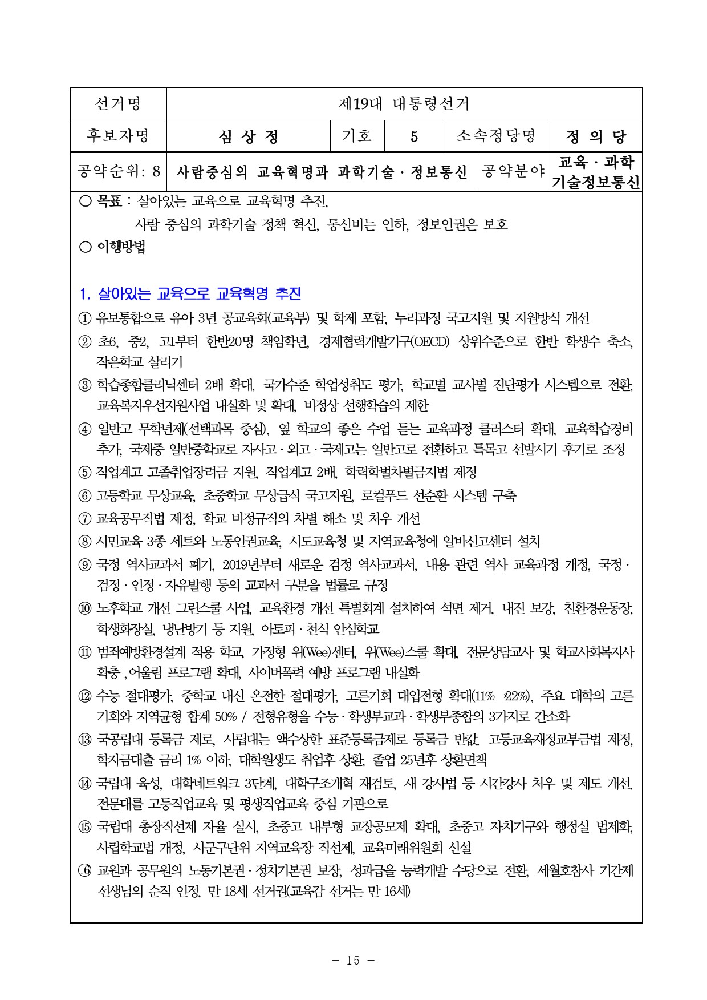
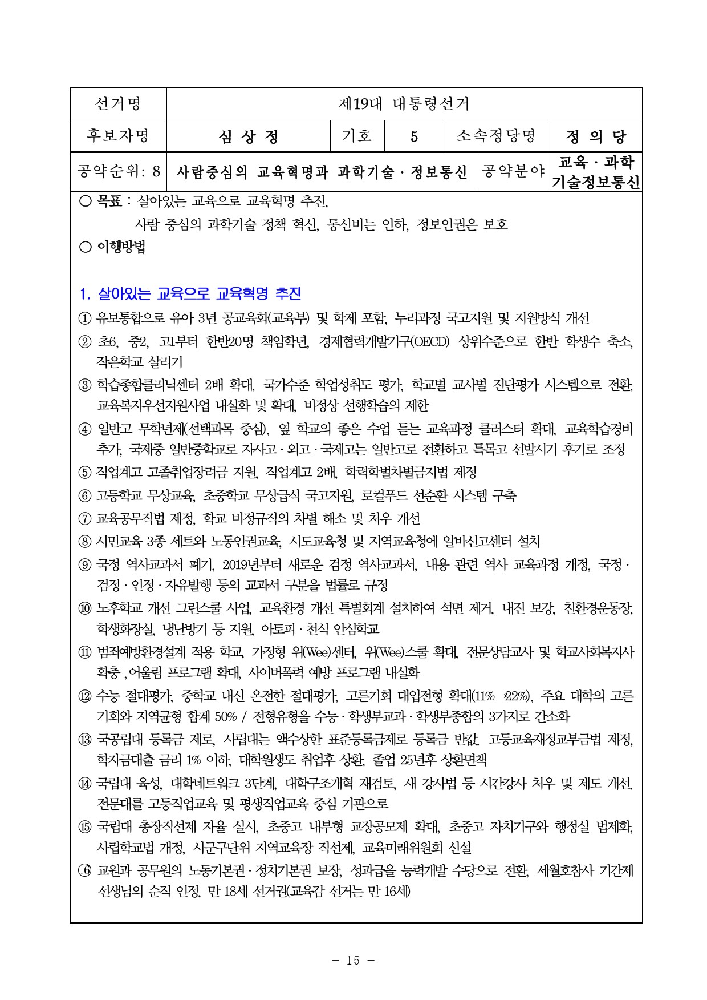

존경하는 국민여러분,
작년 크리스마스 이브, 창원에서 열린 촛불집회에 스물 넷 청년이 무대에 올랐습니다. 그리고 간절히 물었습니다. “박근혜가 퇴진하면 내 삶이 나아질까요?”
회사 생활한지 4년이 되었지만 월급은 최저임금에 고정돼 있다고 했습니다. 세금 떼고 120 만원 받아 이것저것 떼이고 나면 10만원도 채 남지 않는다고 했습니다. 좋아하는 사람이 있지만 결혼은 꿈도 못 꾼다고 했습니다. 미래만 생각하면 가슴 한 귀퉁이에서 슬픈 감정이 올라온다고 말했습니다.
자신이 사는 얘기를 담담히 말하던 청년은 서러움으로 꽁꽁 싸맨 한 마디를 내뱉습니다. “저는 이대로 20년, 30년 살라��� 하면 못 살 것 같습니다.” 끝날 기미도 없이 이어지는 고단한 삶에 절망하면서도, 선배 노동자들이 투쟁으로 따낸 최저임금에 감사하는 착한 청년이었습니다.
그 영상을 보며 울었습니다. 그가 역사책에서 배운 87년 노동자 대투쟁의 성과는 ‘최저임금’만이 아니었습니다. 노동자들의 국회의원도 있었습니다. 바로 접니다. 참 미안하고 부끄러웠습니다.
30년 전, 구로공단으로 향하던 마음을 다시 새깁니다. 그때처럼 두렵고 떨리지만, 그 때처럼 이 길이라는 확신이 있습니다.
평범한 그 청년의 소박한 꿈,‘열심히 일하면, 일한만큼 대가를 받는 행복한 사회’를 만들기 위해 정의당 19대 대선후보 경선에 참여하고자 합니다.
존경하는 국민 여러분,
국민의 삶을 바꾸는 근본적인 개혁을 추진하겠습니다.
지난 60년 대한민국은 숨 가쁘게 달려왔습니다.
세계에서 가장 가난했던 나라가 세계 10위권 경제대국이 되었습니다.
반세기 만에 1인당 GNP가 500배 가까이 성장한 나라는 과거에도 없었고 앞으로도 없을 것입니다.
국정농단에 대한 분노뿐이었다면 천만 촛불은 불가능했을 것입니다.
끝이 보이지 않는 고단하고 피폐한 삶에 대한 근본적 의문이 촛불광장을 열었습니다.
무도한 정권의 퇴출을 넘어, 불의한 체제의 근본적 변혁을 바라고 있습니다.
그래서 ‘이게 나라냐’라는 질문은 ‘같이 좀 살자’는 절규입니다.
산업화 30년, 국가와 기업이 국민에게 약속했던 풍요로운 미래는 오지 않았습니다.
민주화 30년, 노동자, 농민, 중소자영업자 등 가난한 사람을 위한 민주주의는 작동하지 않았습니다.
군부독재는 끝났지만 기득권 정치는 더욱 강화됐습니다.
두 차례 정권교체가 있었지만 국민들의 삶은 더 어려워졌습니다.
법은 철저히 강자의 이익만 편들었습니다.
산업화와 민주화를 동시에 달성한 유일한 나라라는 환호 뒤로
2017년 대한민국은 세계에서 가장 불평등하고, 가장 아이를 낳기 어려운 나라가,
또 청년에게는 헬조선이 되었습니다.
사람을 살려야 합니다.
청년을 다시 일으켜 세우고, 여성에게 희망을 줘야 합니다.
비정규직, 농민, 자영업자 등 일하는 사람들이 꿈 꿀 수 있는 사회가 되어야 합니다.
국가는 경제 수준에 걸맞은 국민 삶의 질을 보장하기 위해 노력할 의무가 있습니다.
인간의 존엄성이 보장되고, 노동의 가치를 존중하고, 생태가치를 우선적으로 고려하는 국가 패러다임의 대전환을 이루겠습니다.
권력과 부의 세습을 근절하고
불평등 해소를 위해 정치, 재벌, 검찰, 그리고 언론·교육 등
사회 전반의 과감한 개혁을 힘 있게 추진할 것입니다.
모두 함께 잘 사는 노동복지국가 만들겠습니다.
1. 노동개혁을 새로운 정부의 제1의 국정과제로 삼겠습니다.
사랑하는 국민 여러분,
모든 사람은 행복할 권리가 있습니다.
누구든 노동을 통해서 자아실현을 하고
자신의 노력에 대해 정당한 대가를 받을 때 행복할 수 있습니다.
그래서 우리 헌법은 노동권 보호를 국가의 기본 임무로 규정하고 있습니다.
그러나 불행히도 대한민국의 압축성장의 역사는 노동을 배제하고 억압해온 역사입니다.
이제 벼랑 끝에 내몰린 노동을 방치하는 어떤 양극화 해소, 해법도 공염불이 될 것입니다.
과로사를 위협하는 장시간 노동, 반값인생 비정규노동,
미래를 설계할 수 없는 최저임금 등 참혹한 노동현실을 과감하게 개혁하겠습니다.
일하기 좋은 나라를 만들겠습니다.
노동부총리제를 신설하고, 노동전담 검사제를 도입하며,
고용노동부를 개편하여 고용청, 근로감독청, 산업안정청을 분리 설치하겠습니다.
무엇보다 우선해서 만연한 임금체불, 쪼개기 계약, 과로사 노동 등
불법·탈법 노동착취를 엄단해서 법의 사각지대에 방치된 노동인권을 보호할 것입니다.
대통령 직속으로 ‘노동시간단축특별위원회’를 구성해서
‘주 40시간 완전정착’과 연간 실 노동시간 OECD 평균 1,800시간으로 줄이겠습니다.
노동시간 단축으로 질 좋은 일자리 창출하고 과로사회 탈출하겠습니다.
임기 내에 국민월급 300만원 시대 만들겠습니다.
비정규직 정규직화, 동일노동 동일임금 원칙 적용, 최저임금 1만원 인상, 최고임금제 도입, 실업급여 확대 등을 통해 현재 소득격차 10배를 7배로 줄이겠습니다.
노동조합 조직률 제고, 단체행동권 보장, 노사공동결정제도의 도입 등
노동의 교섭능력과 참여를 획기적으로 높여 나갈 것입니다.
이미 수명이 다한 노사정위원회를 해체하고,
중앙과 광역시도에 노·사·정·시민사회 등이 참여하는
사회적 합의기구 ‘경제사회전략대화’를 설치 할 것입니다.
2. 재벌세습경제 단절, 불평등 해소하는 정의로운 경제를 실현하겠습니다.
박영수 특검이 이재용 삼성전자 부회장 구속영장 청구를 하면서
내세운 단어가 ‘경제’가 아닌 바로 ‘정의’였습니다.
오늘 새벽 법원의 구속영장 기각 소식을 듣고
저를 비롯한 많은 국민들은 우리 헌법 제1조 1항을 ‘대한민국은 삼성공화국이다’로 읽었을 것입니다.
1%의 소수 대기업과 부자의 번영을 위해
99%가 볼모로 잡히는 경제는 정의롭지 못합니다.
불평등을 심화시키는 정경유착, 낡은 부패기득권 끝장내야 합니다.
이를 위해 무엇보다도 먼저 재벌3세 경영세습을 금지하고 재벌독식경제를 개혁하겠습니다.
애초부터 법대로만 해도 재벌 3세 세습과정에서 벌어지는 부패와 정경유착은 근절됩니다. 거의 모든 대선후보들이 앞 다투어 재벌개혁을 외치고 있지만,
가장 필요한 것은 더 이상 총수일가의 불법과 탈법을 봐주지 않겠다는 대국민 약속입니다.
또 최후의 구조교정 수단인 기업분할, 계열분리 명령제를 도입하여
재벌의 불공정거래 및 총수일가의 부당한 사익추구를 막겠습니다.
출발선이 다른데 공정한 경쟁만을 주장하는 것으로는 불평등을 막을 수 없습니다. 고통분담은 상위 1%부터 시작해야 합니다.
이를 위해 불평등해소를 위한 3대 대압착(great compression) 플랜을 추진하겠습니다.
노동시장 안에서는 ‘최고-최저임금연동제(일명 살찐고양이법)를 적용하고,
대·중소기업 간의 격차해소를 위해 ‘초과이익공유제’를 실현하며,
노동시장 밖은 ‘아동·청년·노인 기본소득제’를 단계적으로 도입하겠습니다.
녹색생태산업, 미래성장산업, 사회적기업을 중심으로 성장동력을 육성하겠습니다.
향후 10년 내 OECD 평균 수준의 복지국가를 만들 것입니다.
노동조합·중소기업 등 사회적 약자의 경제주권을 획기적으로 신장시키겠습니다.
3. 2040년 원전제로, 탈핵 생태국가를 만들겠습니다.
서울 하늘이 살인적인 북경 하늘을 닮아가고 있습니다.
사람들은 중금속이 함유된 미세먼지, 황사로 고통 받고 있습니다.
기후변화에 대한 특단의 대책이 없다면 50년 후,
대한민국의 애국가 2절 ‘남산위의 저 소나무’는 ‘저 야자수’로 바뀌어야 할 것입니다.
생태위기는 바로 오늘, 시민들의 삶에 가장 큰 위협이 되고 있습니다.
그 가운데서도 핵발전소의 안전은 대한민국이 가장 시급하게 해결해야 할 과제입니다.
경주 지진에서 보았듯이 활성단층 위에 핵발전소를 두고 살수는 없는 일입니다.
독일, 스위스, 대만 등 지금 세계는 속속 탈핵의 대열에 동참하고 있습니다.
우리나라는 25기가 발전 중인 세계최고의 핵발전 밀집국가입니다.
국민의 생명과 공동체의 미래가 걸려 있는 중대한 사안인 만큼,
국민들의 위험에 대한 자기결정권이 행사되어야 합니다.
원전진흥 정책의 폐기와 2040년 탈핵을 목표로 한 원전정책에 대해
헌법 제72조에 의거해 국민투표를 실시하겠습니다.
수명이 다한 원전은 폐쇄하고, 신규 발전소 건설은 중단하겠습니다.
독일의 에네르기벤데와 같은 ‘에너지전환 2040위원회’를 대통령 직속에 설치하여,
1.7%에 그치고 있는 재생가능에너지에 대한 대대적인 투자를 할 것입니다.
그래서 질서 있는 에너지전환을 이루어 내겠습니다.
4. 한반도 평화체제 실현을 위해 ‘적극적 평화외교’
진짜안보를 위한 과감한 국방개혁을 추진할 것입니다.
미국과 중국 사이에서 어설픈 균형을 추구하는 소극적 외교로는
국가의 생존과 번영을 도모할 수 없습니다.
강대국의 틈바구니에서 눈치 외교, 줄서기 외교로 일관한 결과
대한민국은 외교미아가 되어 버렸습니다.
사드배치 과정에서 보듯이 한국은 국제정치라는 장기판의 졸로 전락했습니다.
한반도 주변정세를 주도하면서 평화공존의 새 질서를 창조하는
평화의 리더십이 그 어느 때보다 필요합니다.
저는 강대국간의 갈등을 중재하고 협력을 도모하는 ‘적극적 평화외교’를 추진할 것입니다.
핵 시대의 문턱에서 지금 우리가 집중해야 할 것은 북한 핵동결, 전쟁방지, 긴장완화입니다.
이것을 당면목표로 제2의 페리프로세스를 적극 추진해야 합니다.
강압이냐 포용이냐의 이분법을 넘어 무엇보다 북한을 대화의 테이블에 앉히고
북핵동결을 이끌어내는 인센티브를 책임 있게 제시해 나가야 합니다.
더불어 주변국들이 서로의 국가 안보이익을 조정하고 보장하는 한반도 평화협정 체결을 추진해가겠습니다.
보���가 독점한 ‘안보’를 주권자인 시민에게 되돌려 줄 과감한 국방개혁을 추진하겠습니다.
그 하나로 민간인 국방장관 시대를 열겠습니다.
국방을 민주적으로 통제하면서 투명한 국방운영을 통해
국가안보의 틀을 재구성하기 위해 불가피판 선택이라고 생각합니다.
6개월 의무복무 후 4년의 전문병사제도를 도입하여 튼튼한 군을 만들 것입니다.
인구절벽 시대에 우리의 군을 정예화 된 강한 군대로 재편할 것입니다.
방산비리 척결, 병사들에게 최저임금의 40% 지급, 군사법원 폐지로 군 인권 등 개혁을 실시하여 ‘안보장사’가 아닌 ‘진짜안보’의 기틀을 세워 나갈 것입니다.
5. 과감한 정치개혁으로 국민주권주의를 실현하겠습니다.
결국 정치가 모든 문제를 푸는 출발입니다.
정치개혁은 모든 개혁의 빗장을 여는 열쇠입니다.
천만 촛불로 실현한 ‘국민주권주의’를 다시 장식으로 만들어선 안 됩니다.
국민주권주의를 제도화하는 과감한 정치개혁이 필요합니다.
국민을 닮은 국회를 만드는 ‘정당명부 비례대표제’ 확대
넓고 낮은 정부 수립을 위한 ‘제왕적 대통령제’ 개혁
선진적 연합정치 구현을 위한 ‘결선 투표제’ 도입
국민주권주의 확장을 위한 ‘18세 선거연령 하향’이 그것입니다.
지금이 정치개혁��� 적기입니다.
내가 대통령이 되면 하겠다는 약속은 거짓입니다. 지금 해야합니다.
미룰 이유가 없습니다.
이런 정치개혁의 기반 위에서
국민 기본권 확대, 지방분권 및 자치 강화, 의회 중심의 권력구조 개편을 위한
개헌을 추진해 나가겠습니다.
정의로운 나라를 위해서
불의하고 부패한 권력기관에 대한 대대적인 수술도 진행할 것입니다.
무엇보다 확실한 검찰개혁으로 거꾸로 선 검찰을 바로 잡겠습니다.
부패검찰, 정치검찰을 단호히 솎아 내 권력 사유화를 근절하겠습니다.
수사권 기소권 분리, 검찰총장 직선제 등을 통해 무소불위의 검찰을 견제하겠습니다.
국정원의 국내정치, 사찰을 원천적으로 금지시키고,
대북 및 해외 테러를 전담하는 해외정보원으로 개편하겠습니다.
존경하는 국민여러분,
대한민국은 대전환기에 있습니다.
우리사회가 당면한 위기를 타개하는 가장 확실한 정치 해결책은 정의당에 있다고 자부합니다.
많은 국민들은 선진국의 잘 갖춰진 복지시스템을 부러워합니다.
또 빈곤이 없고, 서로 평등하고 차별이 없는 나라를 동경합니다.
인권과 자유가 폭넓게 보장되고, 계층상승의 사다리가 잘 갖춰진 나라로 이민가고 싶다고 말하는 분들도 많습니다.
그러나 그 많은 분들이 정작 말하지 않는 것이 있습니다.
선진복지국가는 대부분 강력하고 유능한 진보정당이 그 사회의 주축 정당이라는 점입니다.
2004년 진보정당이 첫 원내진출을 하면��� 한국사회에 복지의 씨앗을 뿌렸습니다.
성장제일주의가 압도하는 대한민국에서 금기어나 다름없던 복지, 노동의 정치를 세우고, 이를 보편적인 정치언어로 만들었습니다.
진보정당은 특권과 차별을 앞세운 기득권에도 과감히 도전했습니다.
장애인, 비정규직, 사회적 약자에 대한 모든 차별과 맞서 헌신적으로 싸웠고,
특권과 반칙이 없는 사회를 만들기 위해 노력해왔습니다.
이번 탄핵국면에서 정의당은 민심을 가장 정확히 읽었고,
가장 먼저 국민께 달려갔습니다.
다른 야당이 주저하고 흔들릴 때마다 중심을 잡은 것은 저희 정의당입니다.
여의도와 광장을 부지런히 오가며, 끝내 탄핵가결을 이끌어냈습니다.
많은 정당과 정���인들이 민생을 말하지만 제대로 된 민생정치를 본 사람은 없습니다.
대선 때마다 불평등과 양극화 해소를 이야기했지만 책임진 대통령은 없습니다.
아무리 민생을 앞세워도 헌신적으로 사회적 약자들과 함께 싸워오지 않은 정당은 민생정치를 실현할 수 없습니다.
아무리 개혁을 말해도 기득권에 맞서 흔들림 없이 싸워오지 않은 정치인은 개혁을 실천할 수 없습니다.
감히 말씀드립니다.
촛불시민이 요구하는 기득권 타파, 과감한 민생개혁을 가장 잘 할 수 있는 당 정의당입니다. 저 심상정입니다.
국민여러분께서 정의당에 던지는 지지만큼 한국 사회는 개혁될 것입니다.
국민께서 심상정에 주는 지지율만큼 고단한 청년과 여성들의 삶은 개선될 것입니다.
저는 정의당이 더 강해지는 만큼 우리 정치가 좋아질 것이라는 확신합니다.
정의당을 미래 대안정당으로 우뚝 세워 나가기 위해 대통령 후보로서 혼신의 힘을 다하겠습니다.
감사합니다.
2017년 1월 19일
정의당 대선 후보 심상정

 
